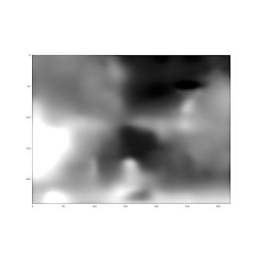
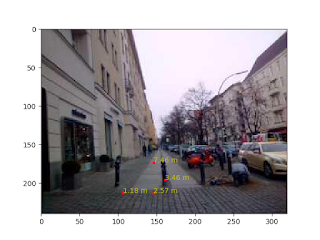

Derin Öğrenimle 3D Uzaklık Bilgisi, Görüntü Bölümleri Bulmak
DO ile dış dünyadaki objelerin derinliğini, tek kamera kullanarak ayrıca kameranın hareketini hesaplayabilen bir ağ yapısı surada paylaşılmış. Yazarlardan biri David Lowe: bu araştırmacı DO'dan önce de yapay görüş alanında ünlüydü, görüntülerden özellik çıkartmak (feature extraction) alanında mesela SIFT buluşu vardır... Ilginç bir hikaye: Lowe SIFT'i keşfeder ama bu keşif hakkındaki yazıyı hiçbir bilimsel yayın kabul etmez, o da SIFT'i patentler.
Neyse, genç bir diğer bilimci Zhou'nun başlattığı ve diğerlerinin katıldığı bu en son makalede ilginç bir diğer özellik DO'nun eğitiminin tamamen denetimsiz (unsupervised) olması, yani veri için etiket yok. DO hakkında yapılan eleştirilerden biri çok fazla etiketli veriye ihtiyacı olması, denetimsiz çalışmaması. Bu yaklaşım denetimsiz, ama aslında dolaylı olarak denetimli, çünkü etiketleri eğitim sürecinin kendisi üretiyor. Denetimli eğitim bilindiği gibi, mesela regresyon tekniğinde verili X için bir y'ye bir model uyduruyoruz, y'ler etiket ya da hedef verileri oluyorlar. DO'lar model uydurmayı çok boyutlu ve çok daha esnek şekilde yapabiliyorlar.
Denetimsizlik icin etiket üretimi perspektif geometri kullanarak yapılıyor. Perspektif geometride bir imajdan diğerine geçerken mesela kamera duruşunun nasıl değiştiğini biliyorsak 1. imajı yamultup (warping) 2. imaja çevirebiliriz, ya da ters yönde ters yamultma ile geriye gidebiliriz. Bunu biliyoruz. Arkadaşlar iki ağ yapısı kurmuşlar, biri derinlik için diğeri duruş için; Bir video'daki tüm kareleri işlerken önceki, sonraki, mevcut imaj kullanıp duruş, sonraki imaj kullanılarak mevcut resimdeki derinlik tahmin edilmeye uğraşılıyor. Sonra her iki ağın çıktısı kullanılarak önceki imaja doğru ters yamultma yapıyorsunuz, eğer yamultma iyi olmadıysa önceki imaja uymayacaktır tabii ki ve bu "hata" bir gradyan inişle her iki ağ üzerinde düzeltme amaçlı kullanılabilir. Geriye doğru yamultma işleminin türevi alınabilir halde olması için özen gösterilmiş ki DO ile eğitim yapılabilsin. Fikir müthiş. Yani perspektif geometri üzerinden verinin kendisi dolaylı denetimli eğitim sağlamış oluyor.
Egitim KITTI adli bir veri seti üzerinde yapılmış. KITTI saatlerce bir arabanın yolda giderken kamerasından kaydedilmiş görüntülerini içerir.
Kod şurada
https://github.com/tinghuiz/SfMLearner
DO için Tensorflow kullanılmış, kurmak için
sudo pip install tensorflow==1.1
Eğitilmiş modeli models/download_model.sh ile indirebiliyoruz. Biz modeli modeli test ettik, şu imaj üzerinde,
from __future__ import division
import os, time
import numpy as np
import scipy.misc
import tensorflow as tf
from SfMLearner import SfMLearner
from utils import *
import matplotlib.pyplot as plt
mode = 'depth'
img_height=240; img_width=320
ckpt_file = 'models/model-145248'
I = scipy.misc.imread('ins.jpg')
I = scipy.misc.imresize(I, (img_height, img_width))
sfm = SfMLearner(batch_size=1,img_height=img_height, img_width=img_width)
sfm.setup_inference_graph(mode=mode)
saver = tf.train.Saver([var for var in tf.trainable_variables()])
with tf.Session() as sess:
saver.restore(sess, ckpt_file)
pred = sfm.inference(I[None,:,:,:], sess, mode=mode))
p = pred['depth'][0,:,:,0]
plt.imshow(normalize_depth_for_display(p))
plt.savefig('out2.png')
Sonuç
Daha aydınlık pikseller daha yakın demek. Ortadaki engel açık şekilde görülüyor. Metre olarak biz bazı seçilmiş pikselleri kontrol ettik,
Çoğu piksel iyi, alt soldaki daha iyi olabilirdi. Muhakkak bu yaklaşımda ilerlemeler olacaktır, ayrıca zaten üstteki türden resimleri kullanarak eğitim yapılsa sonuçlar daha iyi olabilirdi. Yapılan az buz iş değil; tek resme bakılarak tüm piksellerin derinlik bilgisini bulmak!
Peki birkaç resme bakarak (video mesela) o resimlerdeki tüm objeleri üç boyutta bulmak, takip etmek amacında neredeyiz? Bu bağlamda daha gidecek yol var. Şimdilik en iyi seçenek DO (ya da diger, mesela Felzenswalb) kullanarak iki boyutta görüntü bölmesi (segmentation) yapmak, sonra bu iki boyuttaki görüntü parçalarını 3D takibi yapacak filtrelere geçmek. Filtreler kalman ya da parçacık filtreleri olabilir. Takip etme işlemi de zor bir iş yapıyor, bir zorluk takip edilen objeler görüntüden çıkıyorlar, yeni objeler tekrar giriyorlar. Bir digeri imaj parçalarının doğru filtre ile eşleşmesi lazım, bu eşleşmeyi direk yapan yaklaşım var, olasılıksal yapan yaklaşım var (imaj parçası 'tüm' filtrelere verilir, ama her filtrenin bir hipoteze bağlı olma olasılığı vardır). Filtrelemede iyi bilinen bir diğer numara aynı ölçümün (bu durumda 2D imaj parçası) iki farklı filtreye verilmesi, mesela bir filtre objenin sola doğru gitmesi, bir diğeri üzerimize doğru gelmesi. Hangi filtre / hipotezin artığı / hatası daha az ise, o baskın haldedir, ve onun hipotezi kabul edilir. Ama arka planda olan filtreye hala ölçüm geçilmeye devam edilir. Tüm bu işlemlerin pür DO yaklaşımı ile yapılması çok zor.
Pür 2D imaj bölmesinden bahsetmişken, bu alanda DO ile bir diğer ilerleme SegNet.
http://mi.eng.cam.ac.uk/projects/segnet/
SegNet anlamsal (semantic) bölme yapıyor, bir görüntüde yol, araba, direk gibi temel bölümleri bulup onları etiketliyor.
Microsoft'un COCO veri setini kullanarak (denetimli) şekilde resimde DO ile obje bulma çok ilerledi. COCO verisi etiketli, bol veri var, bir imajdaki objenin nerede olduğunu Amazon'un Mekanik Türk servisi üzerinden gerçek insanlara etiket verdirerek kaydetmişler. Bu yer bir "maske" üzerinden DO'ya veriliyor, ayrıca ham imaj verisi de sağlanıyor. Bu veriyi kullanan ağ yapısı mesela DeepMask var.
Yaklaşımlar DO etrafında bir "yan sanayi" ya da "paylaşma kültürü" oluşmaya başladı. Zaten makalelerin neredeyse hepsi artık açık bir ortam olan arXiv'de yayınlanıyor (para ile makale servisi yapan şirketler üzerinden değil), ve DO özelinde ağların kendisi paylaşılıp direk olduğu gibi kullanılıyor. Mesela obje bulma, görüntü işleme yapan DO'lar imajın tamamını sınıflama amaçlı hazırlanmış VGG-16 modelini baz alıyorlar. Ve sadece ağ yapısını değil, eğitilmiş ağın ağırlıklarını bile olduğu gibi kullananlar var. Bu önceden eğitilmiş (pre-trained) model kullanma tekniği. Sonra kendi istediği yeni birkaç katman ekleyebilir, ya da mevcut bir katmanı atıp yerine yenisini koyabilir, vs. Sonra eğitimi mevcut ağırlıkların olduğu yerden "devam ettiriyorlar", böylece mevcut modelden faydalanıyorlar.. Bu mantıklı aslında çünkü VGG-16 imaj sınıflaması için eğitilmiş, o zaman ağırlıklarının içinde imajı anlaması için gerekli bazı ayarlar oluşmuş olmalıdır. Takip eden araştırmacılar bu ayarlardan istifade ediyorlar.
Kapatmadan önce bir noktadan daha bahsedelim; DO'nun sadece denetimli olması bir kısıtlayıcı faktördü fakat bize göre eğer problem alanı hakkında temel matematik bilgisi devreye sokulabilirse denetimli problemler denetimsiz hale çevirilebilir. Mesela paylaşılan ilk makalede bu temel bilgi perspektif geometridir. Arkadaşlar kamera duruşu, yamultma, homografi, vs. gibi pek çok temel bilgi devreye sokarak sonuca ulaşmışlar. DO alaninda bazen bir beklenti "pür pikselleri vereyim her şeyi öğrensin" türünde olabiliyor. Fakat eğer işimizi kolaylaştıracaksa, "hipotez alanını daralatacaksa" eldeki pek çok diğer bilgiyi devreye sokabiliriz. Bilimin temeli modellemedir ne de olsa. Yazının başındaki makalenin yazarlarından Kendall surada benzer vurguyu yapmış.
EK:
Sehir ici etiketlenmis goruntuler icin Cityscapes veri seti ilginc.


Yukarı